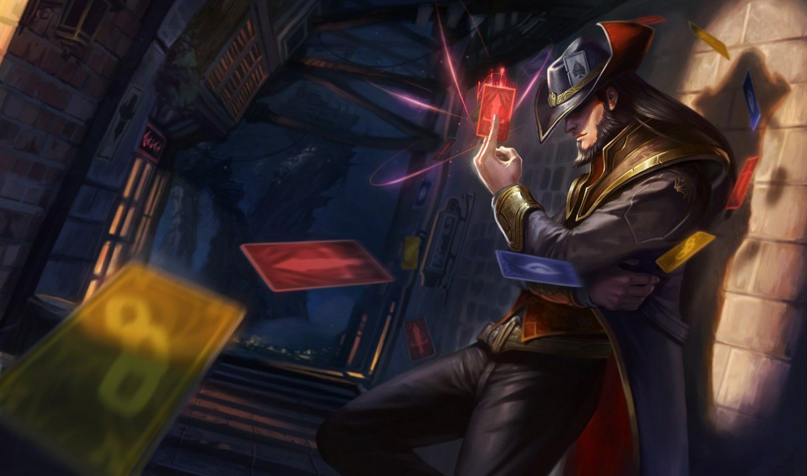
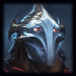
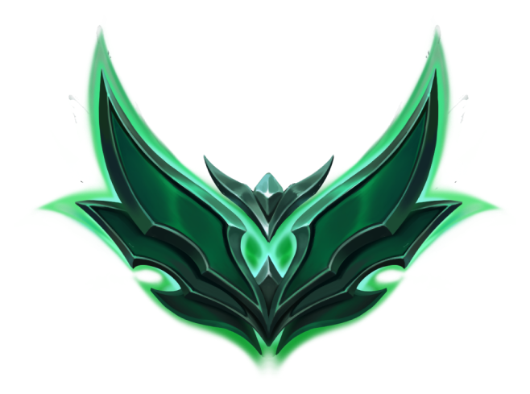

Live champion-pool guard
Every hover is checked against the champions you chose.
Lock keeps your champion pool visible, watches champ select live, and warns you before an off-pick becomes a ranked mistake.



THE PROBLEM
WHAT LOCK OFFERS
Not another scouting overlay. Lock is built around your own pool, your own form, and the decision in front of you.
Every hover is checked against the champions you chose.

A clean alert appears before hesitation becomes a bad pick.
Your visual fingerprint bends, calms, and changes with your profile.
Fizz67% WR · 2.53 KDA84Talon58% WR · 2.12 KDA71Recent pool games are ranked using real win rate and KDA.
Rank, LP, form, pool, and real tier emblems in one place.
A compact OBS overlay makes your Lock status part of the stream.
LIVING PLAYER FINGERPRINT
Strong discipline creates a calm signature. Risk, instability, and a scattered pool bend and heat the DNA so you can see when something needs attention.

SETUP GUIDE
Lock reads the League Client's local lockfile to understand when champ select starts and what you are hovering.
Leave either page open before champ select so live status and the off-pick popup work exactly as intended.
Start League Client on your PC.
Automatic, or select it in Settings.
Build your trusted champion pool.
Queue and let Lock watch the hover.
WHAT IS A LOCKFILE?
It gives Lock the temporary local port and authorization required to read client state and champ select. It stays on your computer—no Riot password required.
C:\Riot Games\League of Legends\lockfileCREATOR & OWNER
Lock, its visual system, and the original champion-pool focus concept are independently designed and developed by KeniX.

Feedback, bug reports, partnerships, or ideas.
kenixio777@gmail.com ↗GitHub · @kenixxiLOCK v1.2.3 · WINDOWS